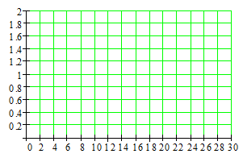
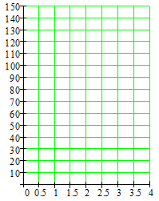
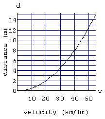

In this Lesson we consider direct variation, as a precursor to the later study of power functions. We consider how to identify different forms of variation from a table, a graph, or an equation, and how to model applications with variation equations.
As you work through the Activities, it is helpful to keep a record on the blackboard listing the properties of direct variation and direct variation with a power (for this course, the power is almost always two or at most three). Include how to recognize variation from a table of values, the form of the equation, and the shape of the graph.
Activity5.4.1.Tax Rate.
Delbert’s credit card statement lists three purchases he made while on a business trip in the midwest. His company’s accountant would like to know the sales tax rate on the purchases.
Price of Item ($)
18
28
12
Tax ($)
1.17
1.82
0.78
Tax/Price
\(\hphantom{0000000}\)
\(\hphantom{0000000}\)
\(\hphantom{0000000}\)
Compute the ratio of the tax to the price of each item. Is the tax proportional to the price? What is the tax rate?
Express the tax, \(T\text{,}\) as a function of the price, \(p\text{,}\) of the item.
Sketch a graph of the function.

What is the slope of the graph?
Look back at your work above to answer the questions.
How can you recognize a direct variation from a table of values?
How can you find the constant of variation?
Activity5.4.2.Weight on the Moon.
The weight of an object on the moon varies directly with its weight on earth. A person who weighs 150 pounds on earth would weigh only 24.75 pounds on the moon.
Find a formula that gives the weight \(m\) of an object on the moon in terms of its weight \(w\) on earth.
Complete the table.
\(w\)
100
150
200
400
\(m\)
\(\hphantom{0000000}\)
\(\hphantom{0000000}\)
\(\hphantom{0000000}\)
\(\hphantom{0000000}\)
Use technology to graph your function. Make a sketch of the graph and label the scales on the axes.
How much would a person weigh on the moon if she weighs 120 pounds on earth? Label the corresponding point on your graph.
A piece of rock weighs 50 pounds on the moon. How much will it weigh back on earth? Label the corresponding point on your graph.
Activity5.4.3.Acceleration.
At constant acceleration from rest, the distance traveled by a racecar is proportional to the square of the time elapsed. The highest recorded road-tested acceleration is 0 to 60 miles per hour in 3.07 seconds, which produces the following data.
Time (seconds)
2
2.5
3
Distance (feet)
57.32
89.563
128.97
Distance/Time\(^2\)
\(\hphantom{0000000}\)
\(\hphantom{0000000}\)
\(\hphantom{0000000}\)
Compute the ratios of the distance traveled to the square of the time elapsed. What is the constant of proportionality?
Express the distance traveled, \(d\text{,}\) as a function of time in seconds, \(t\text{.}\)
Sketch a graph of the function.

Look back at your work above to answer the questions.
In part (a), you computed the ratio \(\dfrac{d}{t^2}\) (not the ratio \(\dfrac{d}{t}\)). Why?
What sort of graph do you get for the function?
Activity5.4.4.Stopping Distance.
The faster a car moves, the more difficult it is to stop. The graph shows the distance, \(d\text{,}\) required to stop a car as a function of its velocity, \(v\text{,}\) before the brakes were applied.

Find a formula for \(d\) as a function of \(v\text{.}\) Hints:
How do you know from the graph that \(d=kv^2\) (instead of \(d=kv\)) ?
Use a point on the graph to find the value of \(k\text{,}\) and then write the formula.
How fast was the car moving if it took 50 meters to stop?
What is the stopping distance for a car moving at 100 kilometers per hour?
Subsection5.4.1Check Your Understanding
Does every linear function describe direct variation? Why or why not?
If \(H\) varies directly with \(T^2\text{,}\) the graph of \(H=f(t)\) will be part of .
What ratio should you compute to see if \(y\) varies directly with \(x^3\) ?
The graph of a direct variation with a power always passes through .
Subsection5.4.2Wrap-Up
In this Lesson, we worked on the following skills and goals related to functions:
Recognize direct variation from a table of values or a graph
Find the constant of variation and write an equation for the function
Sketch the graph of a direct variation
Subsection5.4.3Questions for Writing or Discussion
Explain why the function \(f(x)=4x+1\) is not an example of direct variation.
If \(y\) varies directly with \(x\text{,}\) does \(x\) vary directly with \(y\text{?}\)
Suppose \(y\) varies directly with \(x\text{.}\) If you multiply \(x\) by a constant \(c\text{,}\) what happens to \(y\text{?}\)
If you double the velocity of a car, will its stopping distance also double? Explain why or why not.
Concept Questions.
When does a table represent direct variation?
If it has a constant slope
If it includes the point \((0,0)\)
If the ratio output/input is constant
If each output is double the previous one
If \(y\) varies directly with \(y\text{,}\) what does the constant of variation tell us?
The \(y\)-intercept of the graph
The slope of the graph
What happens to \(y\) when you double \(x\)
The size of the input values
How can you test whether a table for represents direct variation with a power?
Plot the points
Check whether \(y^n\) is a constant
Check whether \(y/x^n\) is a constant
Check whether \(y^n/x^n\) is a constant
Which basic functions might represent direct variation with a power?